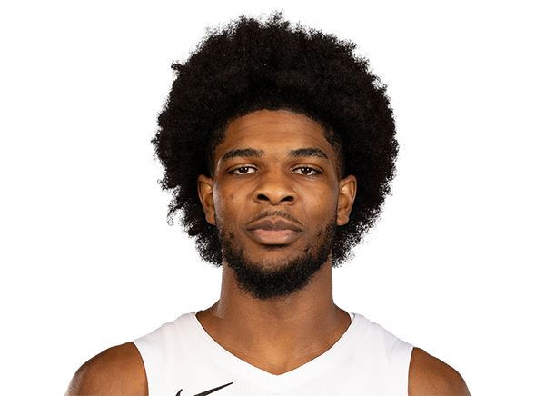

BASKETBALLKEEP
Dynasty · Redraft · Hardwood

PG · POR
Scoot Henderson
Keep #25
Board #34
Age 22
6,440 BK Value
Plus
- Helps in assists. Enough dimes to keep the column honest.
- Helps in points. You are not punting the scoring column.
- Helps in steals. The defensive events are real.
Minus
- Free-throw % is a leak. Paint finishes that miss the line.
- Turnovers run high. Pair him with safe handles.
- Threes are thin. The shot is not a category you can count.
- Blocks are a hole. Guard-sized on that column.
Boards
Where the boards put him
High 10 · low 132.
| Board | Rank |
|---|---|
| RotoWire | 10 |
| Hashtag Points | 13 |
| ESPN Dynasty | 13 |
| Dynasty Nerds NBA | 13 |
| Razzball | 13 |
| Fanspo Dynasty | 15 |
| Draft Sharks NBA | 15 |
| Hashtag Basketball Dynasty | 18 |
| Yahoo Fantasy | 18 |
| KeepTradeCut NBA | 18 |
| NBA.com Fantasy | 18 |
| Basketball Reference ROS | 18 |
On the wire
Scoot Henderson suffers injury in Trail Blazers’ debut, but not before making a ‘statement’
Blazers' Shaedon Sharpe Injury Opens Door for Scoot Henderson Breakout Sports Illustrated
Scoot Henderson Shaedon Sharpe Jrue Holiday P.J. Washington Tyrese Maxey Brandon Miller
Scoot Henderson Returning from Injury Despite Rumors About Status Ahead of Draft
Scoot Henderson Returning from Injury Despite Rumors About Status Ahead of Draft Bleacher Report
Scoot Henderson Ausar Thompson Adou Thiero Isaiah Joe
All players · The Keep · The Board · BK News · Calculator